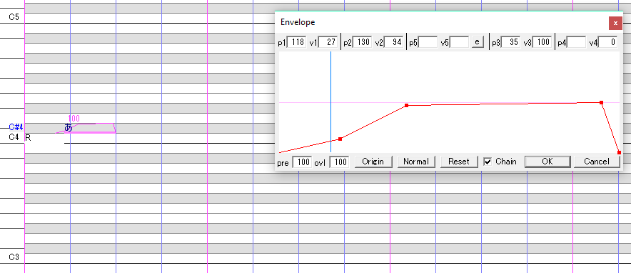
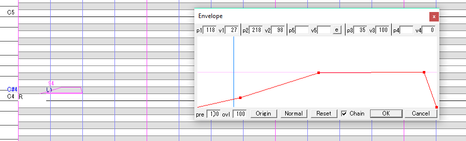
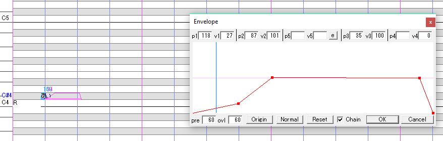
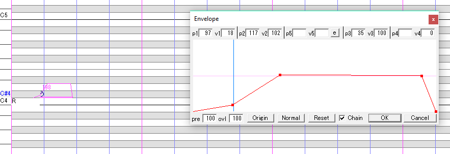
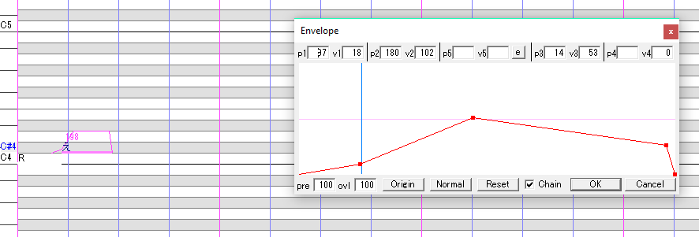
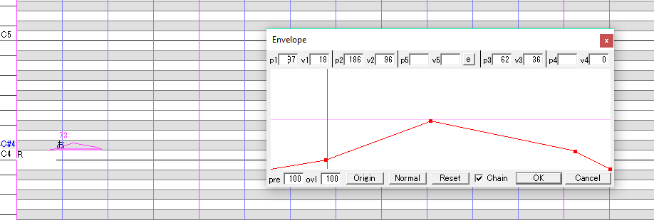
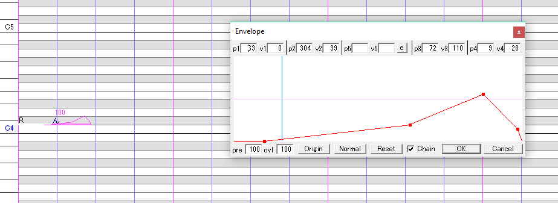

Mi primer banco de voz para UTAU, informacion del personaje, caracteristicar, diseño y demas.
El es Jusako Zenko (じゅさこ ぜんこ).Un joven artista que decidio empezar como un "virtual singer". Aunque el no tenga talento con la voz, lo intenta como un hobby, no algo que le de un futuro prometedor. Es palido, de pelo color violeta grisacio y ojos marrones. Usa lentes y tiene una rara personalidad. Le gusta cantar canciones pop, mas que nada, y aunque no tenga buena voz, lo intenta.
| Nombre del personaje: | Jusako Zenko / じゅさこ ぜんこ |
| Version: | V1 |
| Proveedor de voz: | JUSAKO - KUN |
| Diseño del personaje echo por: | JUSAKO - KUN |
¿como hago que suene desente esta porqueria?. Es recomendable descargar el moreresampler para una mejor calidad de audio, ya que, puede soltar ruidos de fondo que no deberian sonar.
"Los fonemas suenan para el c*lo". Sí, algunos fonemas suenan muy mal por la humilde calidad de la grabacion de los mismos pero, puede ir a la opcion de "evelope"(solo es recomendable en los fonemas "あ", "い", "う", "え", "お" y "ん").
En "あ" recuerda subirle un poco el volumen porque lo pierde cuando se usa
En "い" recomendable que lo cambie entre 60 o 80 cuando el fonema anterior dura muy poco
En "う" suba el volumen ya que suena muy bajo
En "え" suba algo el volumen por lo mismo del fonema "う"
En "お" baje un poco el volumen aunque sea muy poca la diferencia por lo horrible que suena en sí (debí grabarlo otra vez...)
En "ん" solo copie como esta en la imagen y si suena algo fuerte baje un poco el volumen
